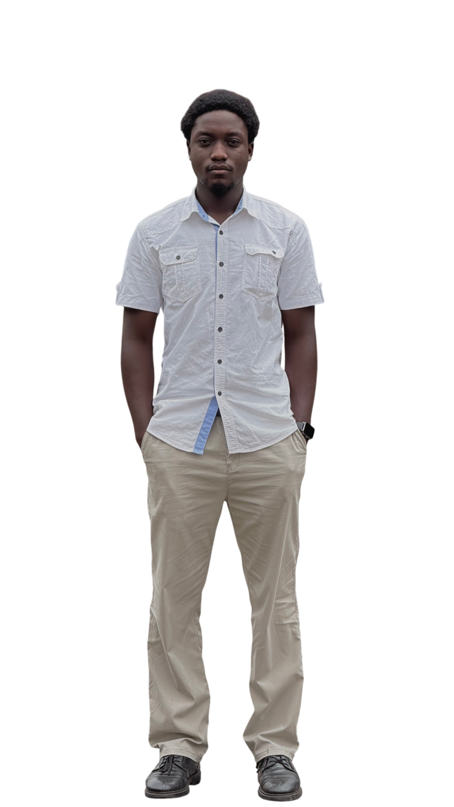

Dean’s Honor List
Academic Distinction – 2024/2025
I’m a Computer Engineering student who loves working with hardware, learning about data communication, and understanding how different systems connect and work together.
Outside of engineering, I enjoy taking and editing videos. I like combining my technical side with my creative side and using both to bring ideas to life.

Dean’s Honor List
Academic Distinction – 2024/2025
DCS UI/UX Hackathon – Patriot
Led team to second place designing an emergency reporting and public safety platform
Media Head – School of Engineering
University of Ghana – Accra, Ghana
October 2025 – Present
Media Head – School of Engineering
University of Ghana – Accra, Ghana
October 2025 – Present
Videographer and Video Editor
DiDi Jollof – Accra, Ghana
December 2025 – Present
Inventory Manager
Kromthrift – Odorkor, Accra
August 2021 – Present
Production Assistant
KromLabs – Odorkor, Accra
February 2023 – Present
Volunteer
PRUride FunRide 2026
Prudential Life Insurance
22nd August 2026
Waste Education Volunteer
Mohinani Group – Accra
September 2025
Beach Cleanup Volunteer
Clean Ocean Project – Nungua, Accra
June 2026
Volunteer
Presec Bonfire Night – Legon, Accra
October 2025
Volunteer
Children and Youth in Broadcasting
Curious Minds – Kanda, Accra
June 2016